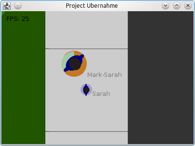

In this game, you will play multiple lifeforms and try to gain control over the whole game world by taking over control over other lifeforms. You start off with a little fly that you can barely see on the screen:
You can zoom into the map using your mouse wheel. You can also drag or pan the map with your mouse, just hold down the primary mouse button and drag the mouse. That way, you can see your fly in more detail.
You can move your fly with the A, W, S and D keys, they work relative to the angle or the selected lifeform. W and S move forward and backward, A and D turn you around. If you fly around long enough, you might encounter some trees on the lawn.
The fly can feed off the tree. You have to select the tree with your secondary mouse button (usually the right one) and hit the F key. Then the fly will automatically fly to the tree and start feeding. That process takes some time …
After a while, the fly will become bigger. You can wait until the whole tree is fed off, but I rather choose to explore more of the world for now. You might encounter some pedestrians on the sidewalk. Your fly is quite big after you ate so much from the tree.
To interact with the pedestrians, you got to select them with your secondary mouse button again. You will see the blue selection mark, telling you that this lifeform is the target of the next interaction.
Now you can hit the T key to take over control over that human. It will take a little time and the human is now underlayed with a green instead of a blue circle, meaning that you can control it now. Now click with your primary key to select it. Then you can move around just as with the fly.
The human can also feed off other humans (and the fly as well, but that does not make too much sense right now). Just select them with the secondary mouse button and press F. Humans will append the name of the prey to their own.
